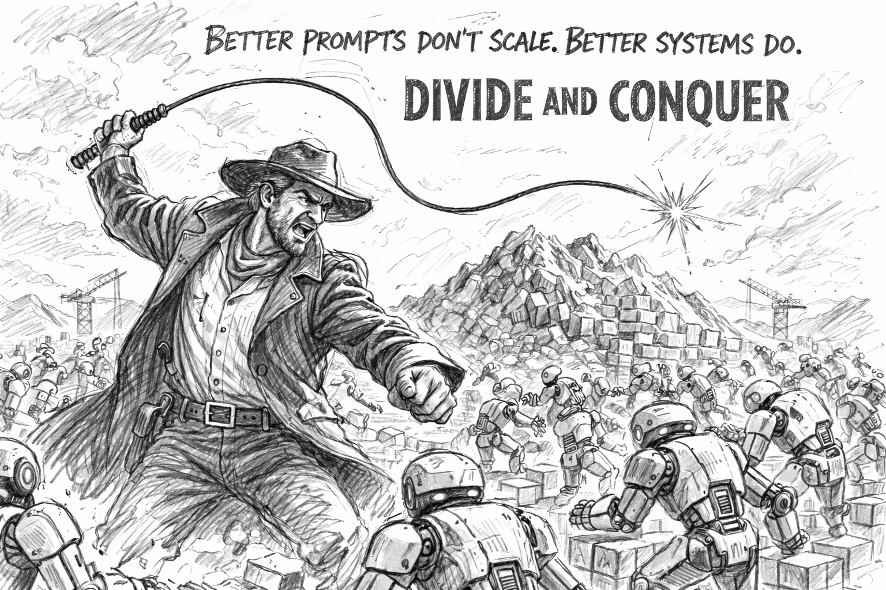

Better prompts don't scale. Better systems do.

AI 코딩 에이전트의 구조적 한계와,
그것을 워크플로우로 극복하는 방법에 대한 기록.
-
AI Agent의 명확한 한계
AI 코딩 에이전트가 개발자를 대체한다? 세 가지 벤치마크가 보여주는 불편한 진실.
-
HBM이 만든 AI의 물리적 천장
AI의 한계는 "아직 부족해서"가 아니다. 물리 법칙이 만든 천장이다.
-
Prompt → Context → Harness : 진화의 방향
프롬프트로 말을 잘 한다고 되지 않는다. 컨텍스트를 잘 넣는다고 되지 않는다. 워크플로우 자체를 설계해야 한다.
-
우공이산 : 나눠서 정복해야 한다
산을 통째로 옮기려 하면 실패한다. 작업을 Phase로 쪼개 각 단계의 컨텍스트를 독립적으로 관리하는 방법.
-
실행이 싸지면, 판단과 비용이 비싸진다
실행 비용이 떨어지면 판단 비용이 상대적으로 비싸진다. 하네스 시대에 개발자에게 요구되는 사고방식.
-
HALO Workflow — 한계를 구조로 극복
앞선 원리들을 실제로 구현한 시스템 — Harness · Agentic · Loopback · Orchestration.